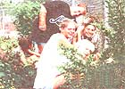
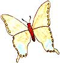
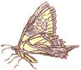
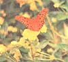
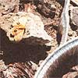
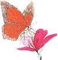
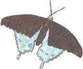
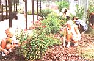

COUNTRY LORE
Learn how to attract butterflies to your flower patch.
Seventh graders weed
and have fun at the
same time. Placing the
garden next to a fence
is good for climbing
plants.
Just plant it and they WILL come-as if by magic-a garden of flittering,fluttering butterflies. Everything I read promised that it was just that easy. My seventh-grade students and I wanted to build a place where we could study living insects interacting with their environment. We had very limited space and, of course, very limited money, but lots of enthusiasm and free labor. We did some research, got support from our school administrator, and wrote a grant request for needed materials. Now we have a garden of beautiful butterflies to study in all stages of their life cycle that hundreds of future seventh graders will enjoy. It really was that easy-just like magic.
Butterflies need the same things that other animals need-water, shelter, the right temperature, and the right food. My seventh graders and I designed a garden to provide survival needs that would attract butterflies.
WATER:A shallow pan full of soil and water will allow a butterfly to drink safely without endangering its fragile wings in the water. Add a couple of rocks where a butterfly can bask in the summer sunlight. Someone donated a beat up, old baking pan from their kitchen for our garden and we ran a sweat hose through the mud in the bot tom of the pan for water. Your plants will also need lots of water.
SHELTER: Butterflies need protection from wind, rain, and predators. They often hide in nearby woody plants like azaleas or trees.
FOOD: Adult butterflies drink the nectar from sturdy flowers. They prefer tubular flowers (yellow) in full sun that will support their weight so they can drink and rest at the same time. Adult butterflies will also carefully seek the right plant to lay their eggs on so that the larva will have the right food to eat upon hatching. If you cultivate the plants needed for larval food, you will see courting, mating, and egglaying in your garden. For example, the monarch butterfly lays its eggs on milkweeds. When the eggs hatch, the tiny caterpillars eat the milkweed plant. The Gulf Frittilary (also the Zebra Longwing) butterfly only lays eggs on the passion vine; the hatching caterpillars eat the leaves of the vine. (Don't use insecticides even though you will have holes eaten in your plants! Otherwise, you won't get to see the magical transformation of a caterpillar "eating" its way into an adult butterfly.)
RESEARCH: First, go to your local library and get some books on butterfly gardening. Also contact your agricultural extension agent, 4-H leader, and your local garden club for specific (free) information about your geographical area. The Freshwater Fish and Non-game Wildlife Commission gave me free materials about Florida butterflies. Like other animals, butterflies have a specific geographic range and definite plant preferences that you must learn about if you wish to attract them. Make a list of butterflies in your area and the plants that will attract them. Once you begin asking around, someone will probably volunteer to give you free transplants from their garden.
GET SUPPORT: If you are working within an institution, it is essential that you enlist the enthusiastic support of your administrator and your groundskeeper. Agree on several different places that a garden could be located, keeping in mind that sunlight, water, and not too much wind are essential. Plan how the garden will be maintained. Talk to parents, students, businesses, family, and friends about your garden and the butterflies that are going to come enjoy it.
JUST PLANT: Assemble materials and sketch out a plan before the BIG day. Recruit anyone to come, bring tools, and help plant. Those who work will have a personal investment in the future of your garden. Now comes the hard part: waiting for the plants to mature, flower, and attract butterflies. They will come ...but not by magic.
MATERIALS LIST
• hand tools, shovel, rake (loaned or donated)
• garden hose and sprinkler or sweat hose (donated or bought)
• fertilizer, peat (Azalea-Camellia fertilizer with trace elements added)
• list of specific nectar and larval food plants for the butterflies In your area (may be transplanted, seeds, or bought)
• list of nearby woody plants to provide shelter (you may need to buy some if there are no places of shelter close by)
• shallow pan for watermulch to discourage weed growth
• 14 butterfly field guide (optional)
|
 Butterfly illustrations are by seventh graders at Wilkinson Junior High in Middleburg, Florida. |
 butterfly |
 Pale swallowtail |
|
 Gulf Fritillary, a north Florida butterfly, drinks nectar from a lantana plant. |
 Buckeye moth warming up on a rock. |
 Monarch butterfly |
|
 Butterfly |
 Everyone volunteers to keep the garden free of weeds. |
|